▲ 백사실계곡 안쪽에 남아 있는 별서 터. 조선시대 명문가의 정원이었던 자리로 추정된다 사진=Wikimedia Commons (Chapchap123, CC BY-SA 3.0)
1. 궁궐도 한강도 아닌, 도심 속 세 곳을 잇는 산책
서울 도심에는 관광버스가 몰리지 않는 조용한 산책 코스가 여전히 남아 있다. 종로구 부암동의 백사실계곡, 인왕산 자락의 초소책방, 성북구 성북동의 길상사가 그렇다. 세 곳 모두 걸어서 둘러보기 좋은 거리에 있고, 저마다 사연이 있다. 백사실계곡은 조선시대 별서 터가 남은 생태경관보전지역이고, 초소책방은 반세기 넘게 청와대를 지키던 경찰 초소를 고쳐 만든 카페 겸 책방이며, 길상사는 고급 요정이었던 자리를 주인이 시주해 절로 다시 지은 곳이다. 세 곳 모두 산자락 좁은 도로에 자리해 있어, 자가용으로 갈 때는 미리 주차 상황을 확인하고 대중교통과 함께 계획하는 편이 낫다.
2. 백사실계곡 — 도롱뇽이 사는 도심 속 별서 터
백사실계곡은 종로구 부암동 115번지 일대, 북악산과 인왕산 사이 골짜기에 있다. 계곡 이름은 조선 중기 문신 백사 이항복의 호에서 비롯됐다는 이야기가 구전돼 왔지만, 국립문화재연구소 조사에 따르면 실제로는 추사 김정희가 이 터를 사들여 별서를 새로 지었다는 문헌이 확인된다. 정확한 유래는 여러 설이 엇갈리는 셈이다. 계곡 안쪽에는 '백석동천(白石洞天)'이라 새겨진 바위와 별서 터, 연못이 남아 있는데, 이 각자바위는 2008년 사적에서 명승 제36호로 변경 지정됐다. 백사실계곡은 도롱뇽·무당개구리·가재 등이 사는 1급수 청정 계곡으로, 서울시가 2009년 11월 생태경관보전지역으로 지정해 관리하고 있다.
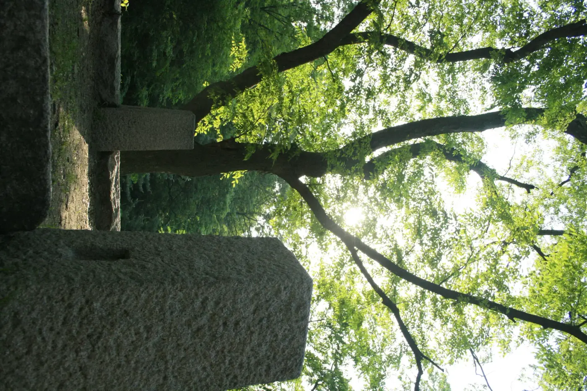
▲ 백사실계곡 별서 터에 남은 주춧돌과 우거진 숲. 도심 한복판이라는 사실이 믿기지 않을 만큼 조용하다 사진=Wikimedia Commons (Chapchap123, CC BY-SA 3.0)
계곡 입구까지는 부암동 골목을 따라 걸어 들어가야 한다. 세검정 방면에서 올라가는 길과 부암동주민센터 방면에서 내려가는 길, 두 방향 모두 경사가 완만해 남녀노소 걷기에 부담이 적다. 별서 터 안쪽 육각정과 연못까지는 왕복 30분 안팎이면 충분하다.
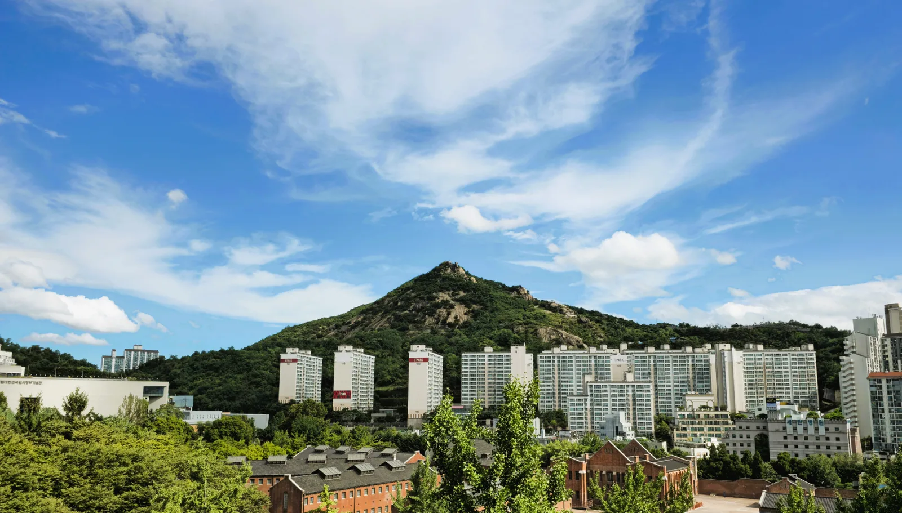
▲ 화강암 봉우리가 도드라진 인왕산 전경. 백사실계곡은 이 산과 북악산 사이 골짜기에 있다 사진=Wikimedia Commons (MonasteryInwang, CC BY-SA 4.0)
3. 백사실계곡, 자가용보다 두 다리가 편한 이유
백사실계곡은 주차장이 따로 마련돼 있지 않다. 부암동 자체가 산자락 주택가라 도로 폭이 좁고(왕복 통행이 어려운 4m 안팎 구간이 많다), 주차 공급률도 종로구 평균에 크게 못 미쳐 갓길 정차가 쉽지 않다. 종로구가 부암동주민센터 인근에 '무계원 남측 공영주차장'(지하 1층·지상 2층, 총 22면)을 조성해 사정이 조금 나아졌지만, 계곡 입구까지는 도보로 다시 이동해야 한다. 대중교통을 이용한다면 지하철 3호선 경복궁역에서 마을버스나 시내버스로 환승해 '부암동주민센터' 정류장에서 내리거나, 세검정 방면은 상명대·석파랑 정류장을 이용하면 된다.
📍 방문 전 확인할 것
부암동 일대는 거주자 우선 주차구역이 많고 불법 주정차 단속도 잦다. 공영주차장 만차 시 대안 주차 공간은 종로구청 교통과나 서울시 주차정보안내시스템(parking.seoul.go.kr)에서 사전에 확인하는 것이 안전하다.
4. 인왕산 초소책방 — 청와대를 지키던 초소가 책방이 되기까지
인왕산 자락 중턱, 창의문 방향 성곽길 옆에는 옛 경찰 초소를 고친 카페 겸 책방이 있다. 이 건물은 1968년 1월 21일 무장공비 김신조 침투 사건(1·21 사태) 이후 청와대 방호를 위해 설치된 경찰초소 '인왕CP'였다. 50년 넘게 초소로 쓰이던 이 건물은 2020년 11월, 철근콘크리트 골조를 그대로 살린 채 시민에게 개방된 복합문화공간으로 탈바꿈했다. 정식 명칭은 '인왕산 초소책방_더숲Ⅱ'로, 노원구가 운영해 온 복합문화공간 '더숲'이 위탁 운영을 맡고 있다. 1층에는 책방과 카페가 있어 통유리창 너머로 서울 도심을 내려다보며 책을 읽거나 차를 마실 수 있다.
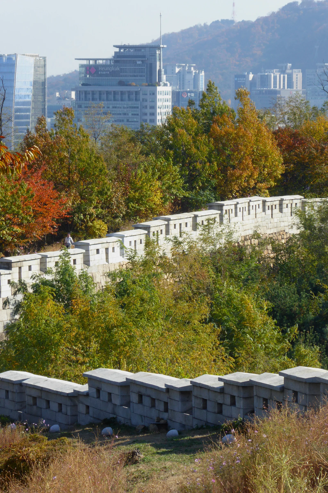
▲ 인왕산 자락을 따라 이어지는 한양도성 성곽길. 초소책방은 이 성곽길에서 멀지 않은 곳에 있다 사진=Wikimedia Commons (Ethan Doyle White, CC BY-SA 4.0)
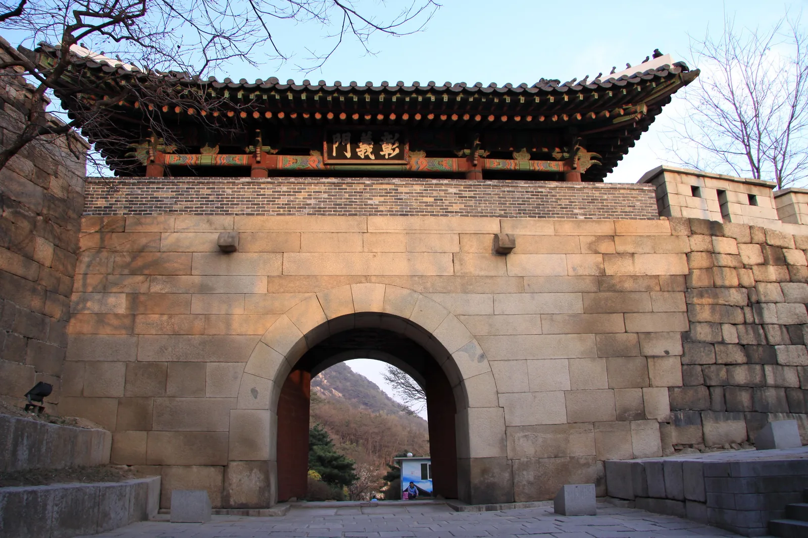
▲ 한양도성 4소문 중 하나인 창의문(자하문). 부암동과 인왕산 자락을 잇는 길목에 있다 사진=Wikimedia Commons (Shiwon Cho, CC BY-SA 2.0)
5. 초소책방, 주차는 3대뿐 — 걸어서 가는 편이 낫다
종로구시설관리공단에 따르면 초소책방의 주차 공간은 단 3대뿐이다. 공단 스스로도 "주차 공간이 협소해 주차 대기로 주변 도로가 혼잡해질 수 있다"며 대중교통 이용을 권한다. 운영시간은 연중무휴 08:00~22:00다. 대중교통으로는 지하철 3호선 경복궁역에서 시내버스(1020·7022·7212)로 갈아타 윤동주문학관 정류장에 내려 도보 약 13분, 또는 마을버스 09번을 타고 수성동계곡 정류장에서 내려 도보 약 10분이면 닿는다. 두 경로 모두 인왕산 자락길을 걷는 구간이 포함돼 있어, 책방에 닿기 전부터 이미 산책이 시작되는 셈이다.
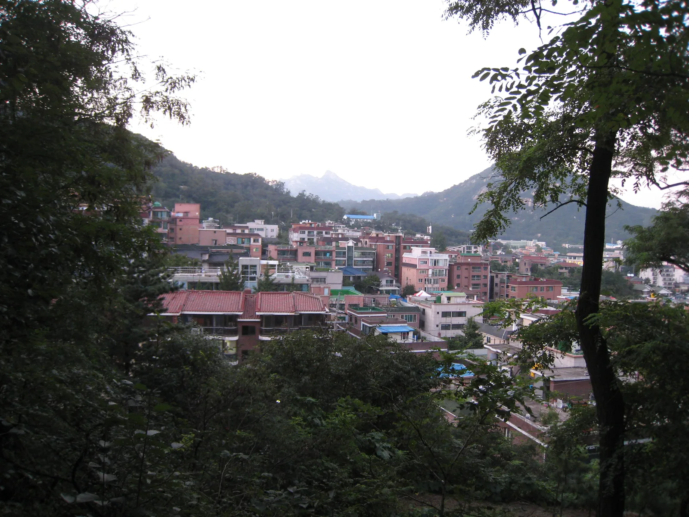
▲ 인왕산 자락길 주변 화단. 가을이면 계절꽃이 피어 산책로를 따라 걷는 재미를 더한다 사진=Wikimedia Commons (Syced, CC0)
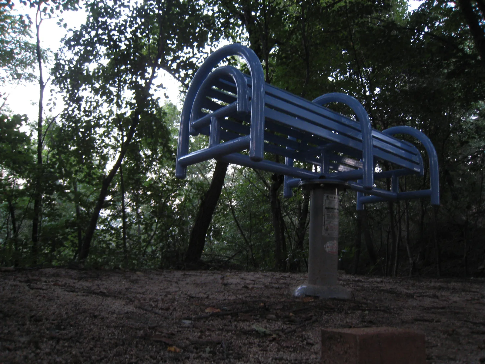
▲ 인왕산 자락길 곳곳에 마련된 운동기구와 쉼터. 초소책방을 오가는 길에 잠시 쉬어 갈 수 있다 사진=Wikimedia Commons (Syced, CC0)
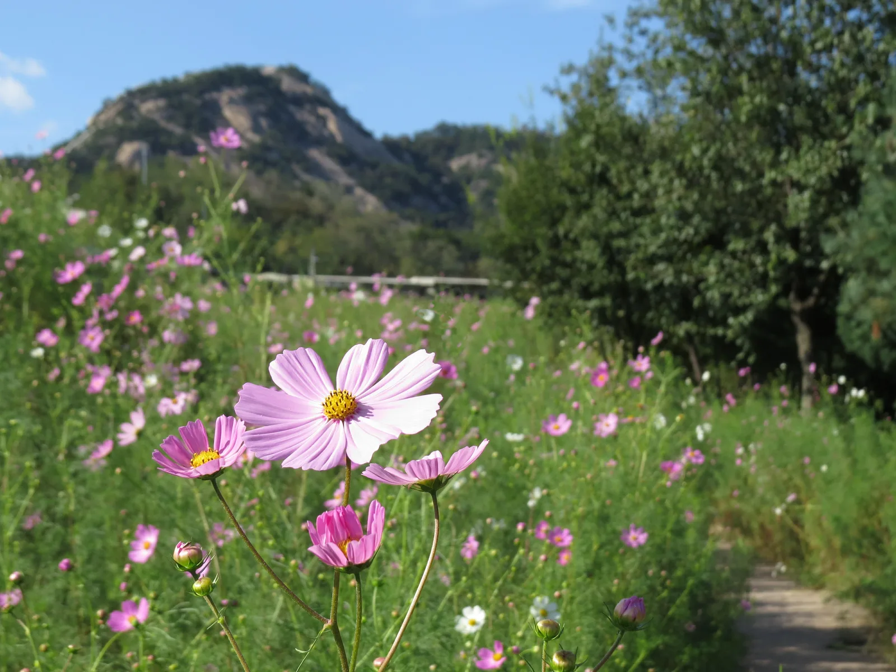
▲ 인왕산 성곽 옆으로 이어지는 산책로. 초소책방을 오가는 길에 성곽 구간을 함께 걷게 된다 사진=Wikimedia Commons (Rtflakfizer, CC BY-SA 4.0)
| 장소 | 자가용 접근 | 대중교통 대안 |
|---|---|---|
| 백사실계곡 | 전용 주차장 없음, 무계원 남측 공영주차장(22면) 이용 후 도보 | 경복궁역 환승, 부암동주민센터·석파랑 정류장 하차 |
| 인왕산 초소책방 | 주차 3대뿐, 대기·혼잡 잦음 | 경복궁역 환승 버스, 윤동주문학관·수성동계곡 하차 도보 10~13분 |
| 길상사 | 경내외 주차 공간 있으나 진입로 좁음, 성북동길 공영주차장 병행 | 한성대입구역 6번 출구 환승, 버스 1111·2112·301 |
6. 성북동 길상사 — 요정 '대원각'에서 절이 되기까지
성북구 성북동 323번지의 길상사는 본래 고급 요정 '대원각'이었다. 대원각 주인이었던 김영한(1916~1999)은 법정 스님의 책 『무소유』를 읽고 감명받아, 1985년 무렵부터 10년 가까이 법정 스님을 찾아가 자신의 요정 부지와 건물을 시주하겠다고 간청했다. 법정 스님은 처음에는 사양했지만 1995년 이를 받아들였고, 그해 6월 '대법사'로 등록한 뒤 1997년 12월 송광사의 말사 '길상사'로 다시 등록했다. 김영한은 이때 '길상화'라는 법명을 받았다. 법정 스님은 2010년 3월 11일 이곳에서 입적했다.
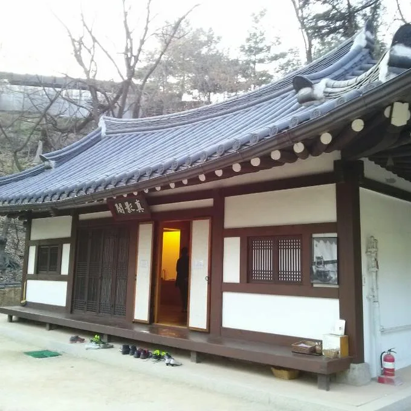
▲ 법정 스님의 유품과 사진을 모신 진영각. 길상사 경내 한쪽에 자리해 있다 사진=Wikimedia Commons (Sim1992, CC BY-SA 3.0)
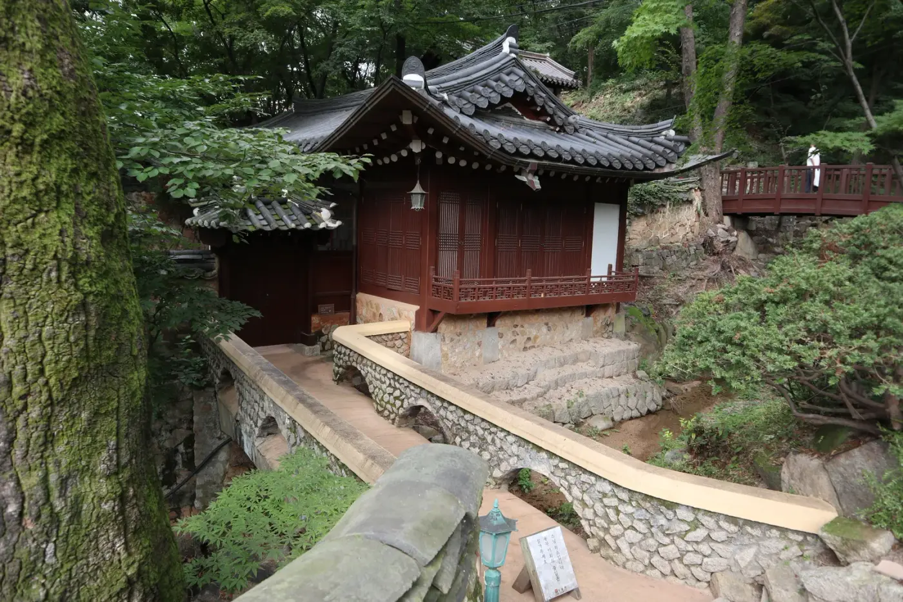
▲ 길상사 경내의 요사채와 돌다리. 요정이었던 옛 건물의 골격이 곳곳에 남아 있다 사진=Wikimedia Commons (S h y numis, CC BY-SA 4.0)
경내에는 극락전·지장전·설법전 등의 전각과 길상헌·청향당·행지실 같은 요사채가 있다. 마당에는 가톨릭 신자였던 조각가 최종태가 만든 관음보살상이 있는데, 법정 스님이 종교 간 화해의 상징을 만들고 싶다는 뜻으로 제안해 2000년 4월 봉안됐다. 정병을 든 손과 화관은 관음보살의 모습이지만 옷차림은 성모마리아와 닮아, 불교와 가톨릭이 한자리에 있는 듯한 느낌을 준다.
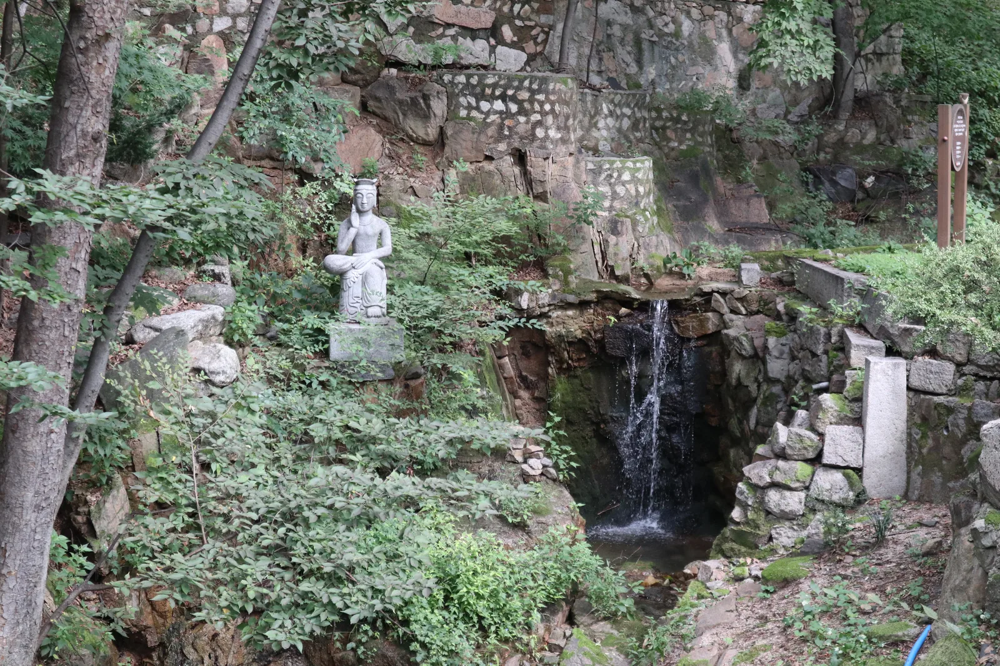
▲ 길상사 경내 작은 폭포 옆에 자리한 석상. 산자락을 낀 경내 곳곳에 이런 조용한 공간이 있다 사진=Wikimedia Commons (S h y numis, CC BY-SA 4.0)
7. 길상사, 주차는 있지만 진입로는 여전히 좁다
길상사는 경내외에 자체 주차 공간을 갖추고 있다. 다만 성북동 자체가 고급 주택가로 도로 폭이 좁고 경사가 있어, 주말이나 단풍철에는 진입로가 붐빌 수 있다. 성북동을 오가던 셔틀버스는 2015년 4월 폐지됐고, 현재는 마을버스 성북02번이 그 역할을 대신한다. 대중교통으로는 지하철 4호선 한성대입구역 6번 출구에서 버스로 약 10분, 또는 도보로는 동소문로(삼선교) 방면에서 20~30분 정도 걸린다. 성북구는 주차난 해소를 위해 성북구립미술관 인근에 '성북동길 공영주차장'(노외 26면·노상 32면, 총 58면)을 조성해 두었으니, 길상사 진입로가 붐빌 때는 이곳에 세우고 걸어가는 방법도 있다.
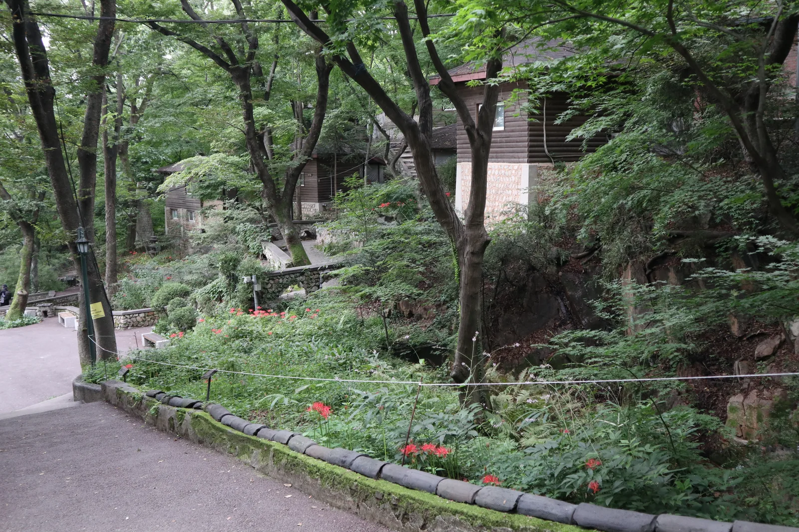
▲ 개울을 가로지르는 돌다리와 전각. 요정 시절 조경이 사찰이 된 지금도 상당 부분 남아 있다 사진=Wikimedia Commons (S h y numis, CC BY-SA 4.0)
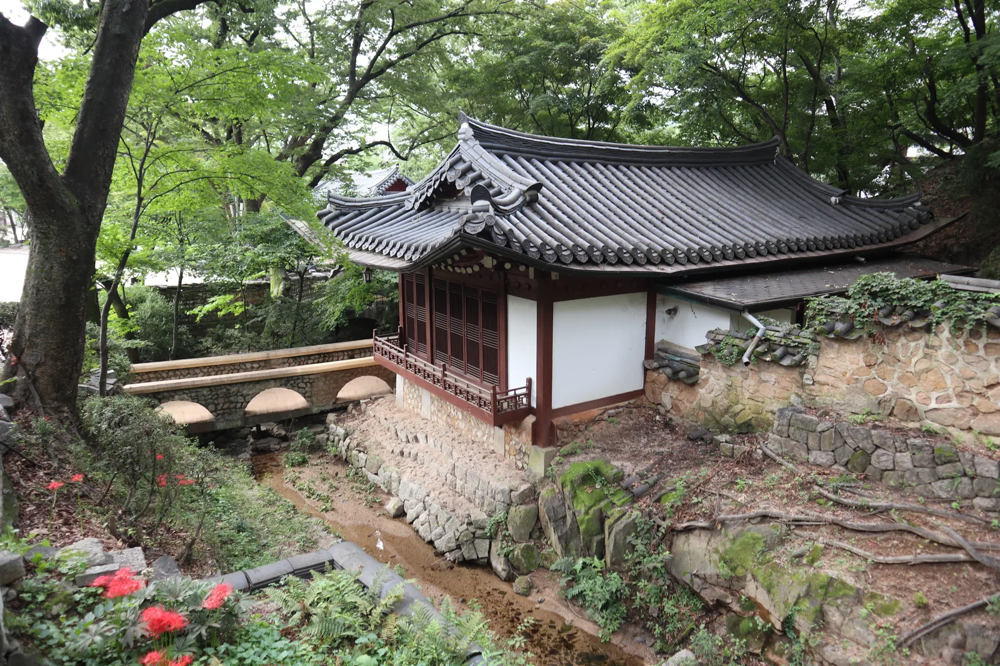
▲ 단풍이 물든 길상사 경내. 11월 초중순이면 경내 나무들이 한꺼번에 물든다 사진=Wikimedia Commons (S h y numis, CC BY-SA 4.0)
📍 방문 전 확인할 것
길상사 템플스테이나 법회 일정, 정확한 주차 가능 대수는 길상사 홈페이지에서 사전에 확인하는 것이 좋다. 성북동 일대는 거주자 우선 주차구역이 많아 갓길 정차가 쉽지 않다는 점도 참고할 것.
8. 세 곳을 하루에 잇는다면
세 곳은 모두 북악산·인왕산 자락에 있지만, 성북동은 산 반대편이라 부암동·인왕산 쪽에서 곧바로 이어지는 지름길은 없다. 오전에는 백사실계곡을 걷고, 인왕산 자락을 따라 초소책방까지 이동해 쉬었다가, 오후에는 도심을 가로질러 성북동 길상사로 넘어가는 순서가 무리가 없다. 세 곳 모두 도로가 좁아 자가용으로 이동하더라도 각 구간은 대중교통이나 도보 구간이 섞이게 되므로, 하루 코스 전체를 촘촘하게 짜기보다는 이동 여유 시간을 넉넉히 두는 편이 낫다. 정확한 이동 거리와 소요 시간은 교통 상황에 따라 달라지므로 출발 전 내비게이션으로 확인하는 것이 좋다.
✅ 출발 전 확인할 것
· 백사실계곡·인왕산 초소책방·길상사 모두 전용 주차 공간이 협소하거나 없어 대중교통 병행 권장
· 부암동·성북동은 도로 폭이 좁고 거주자 우선 주차구역이 많음
· 길상사 템플스테이·법회 일정은 홈페이지에서 사전 확인
· 단풍은 도심보다 늦어 10월 말~11월 중순이 적기
· 이동 구간이 길어 편한 신발과 여유 시간 필수